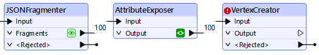
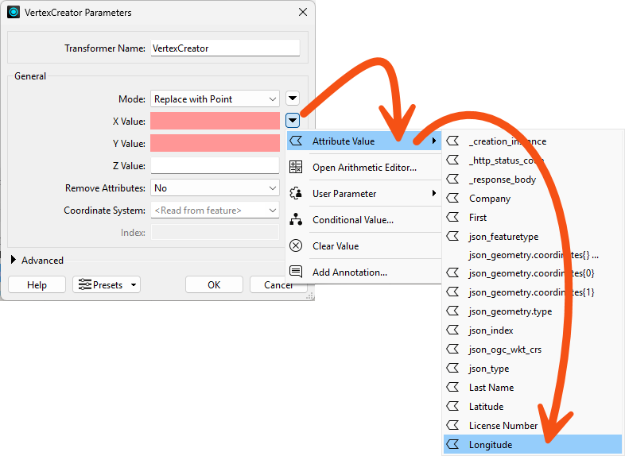
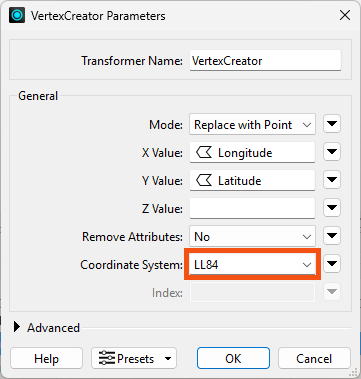
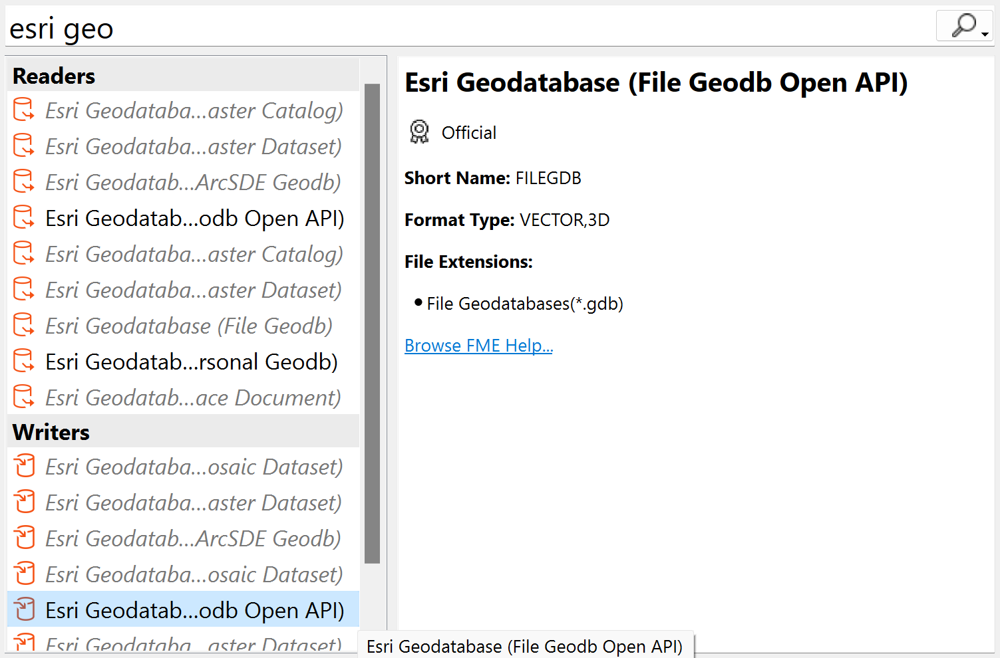
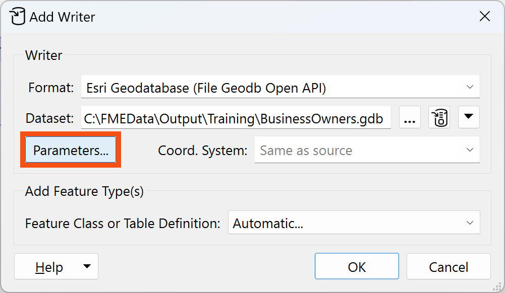
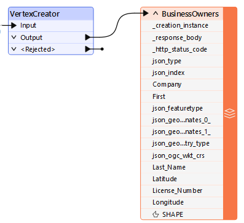
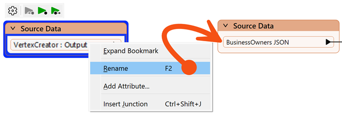
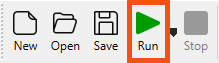
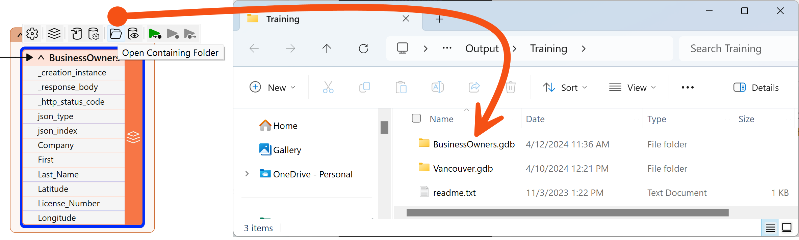

Learning Objectives
After completing this unit, you’ll be able to:
- Use the VertexCreator to create point geometry from coordinate attributes.
- Use Visual Preview to identify when features do not have a coordinate system set.
- Use the Coordinate System parameter in a transformer to set a coordinate system on features.
Resources
- Starting workspace
- C:\FMEData\Workspaces\IntegrateDataWithTheFMEPlatform\create-points-from-coordinates.fmw
- Complete workspace
- C:\FMEData\Workspaces\IntegrateDataWithTheFMEPlatform\create-points-from-coordinates-complete.fmw
- BusinessOwners.json
- C:\FMEData\Data\Planning\BusinessOwners.json
Adding a VertexCreator
Jennifer expects this data to have point geometry, but currently, it only exists as tabular data. However, she has Latitude and Longitude attributes, so she knows she can use the VertexCreator transformer to generate points.
She opens the starting workspace in FME Workbench (2025.0 or later).
She adds one after the JSONFragmenter using Quick Add:

She double-clicks it to open its parameters and configures them like this:
| X Value |
Longitude |
| Y Value |
Latitude |
She clicks OK to close the dialog.

You can set a transformer parameter to use feature attributes by clicking the drop-down arrow next to the parameter and selecting the attribute you'd like to use. This means the transformer will use the value of that attribute for each feature it processes.

Identifying Coordinate System Problems
Jennifer clicks the Run button to run her workspace.
The VertexCreator transformer runs and creates point geometry for her features.
She inspects the cache using Visual Preview.
However, she can tell her points are not aligned with the background map. She expects to see the points located in the area around Vancouver, British Columbia, Canada, but they are not there:

That's because they don't have a coordinate system defined. There are clues Jennifer uses to determine this is a coordinate system problem:
- The features do not appear where she expects. She expected to see them near Vancouver, but they are near Null Island.
- The Graphics view has a warning ribbon that informs her, "Some features in 'VertexCreator: Output' may not align with the background map."
- The Graphics view reports the data uses "Unknown Units" at the bottom right.
- The Feature Information Window reports that the features' Geometry > Coordinate System is Unknown.
Set Coordinate System
To fix this problem, Jennifer opens the VertexCreator again, sets the Coordinate System to LL84, and clicks OK.

⭐ New for FME 2024.2: you can now set feature coordinate systems directly in the VertexCreator. Suppose you need to set a coordinate system otherwise. In that case, you can use the CoordinateSystemSetter transformer if you know the coordinate system but it's not defined or the Reprojector transformer if you need to change the coordinate system.
FME automatically reads coordinate systems from spatial data. However, since we created the points from attributes, no coordinate system information is available to read, so we have to define the system manually.
She runs her workspace.
Then, she inspects the results of the VertexCreator's Output port. She sees 100 point features, correctly located in the Vancouver area:

Map tiles © Stadia Maps, © OpenMapTiles, © OpenStreetMap contributors, © Stamen Design
Once your data has geometry in FME, you can use any of the many spatial data transformers (here's a partial list). Just ensure your data is in the same coordinate system when using these transformers.
Add Geodatabase Writer
Now that her data has the correct attributes and geometry, it's time to write it to geodatabase.
She types Esri Geo, and Quick Add opens. She notices there are many geodatabase formats available in FME. She chooses Esri Geodatabase (File Geodb Open API) under the Writers header. This format does not require an Esri license.

Make sure you select Esri Geodatabase (File Geodb Open API) under the Writers section. People often accidentally select from the Readers section here, which is not what we want.
Once she has selected that format in the Quick Add list, selecting the one under Writers and not Readers, she hits Enter or double-clicks it.
The Add Writer dialog opens. She sets the Dataset parameter to C:\FMEData\Output\Training\BusinessOwners.gdb. The writer will create this folder if it does not already exist:

She then clicks the Parameters button:

She enables Overwrite Existing Geodatabase:

She clicks OK to add the writer.
We'll leave the Feature Class or Table Definition mode as Automatic, the default. This setting means the writer feature type will adopt the schema of any features connected to it. We'll discuss schema handling more in the coming lessons.
She sets Feature Class or Table Name to BusinessOwners. She sets the Geometry to geodb_point:

She clicks OK to add the writer feature type.
She connects the VertexCreator's Output port to the new BusinessOwners writer feature type:

Add Bookmarks
To tidy up her workspace, Jennifer adds two bookmarks.
She selects all her transformers by clicking and dragging, then right-clicks one and chooses Insert Bookmark. She renames it Source Data:

Then she clicks the up-pointing arrow next to Source Data to collapse the bookmark, hiding the work required to read her data:

She adjusts the width of the bookmark to take up less space on the canvas by clicking and dragging the edge of the bookmark. Then she right-clicks the CoordinateSystemSetter's Output port, chooses Rename, and calls it BusinessOwners JSON:

She adds a bookmark (right-click > Insert Bookmark or Ctrl/Cmd+B) around her writer feature type and calls it Writer Feature Types:

Write the Data
Jennifer clicks Run to run her workspace and convert her data.

After the workspace has run, the Translation Log reports that the “Translation was Successful.” Jennifer selects the writer feature type and clicks Open Containing Folder to confirm the geodatabase has been created.

Jennifer is off to a good start. She has created a new geodatabase and loaded the JSON business owner data into it. Next, she has to edit the schema.
Exercise
Follow along with Jennifer’s steps.